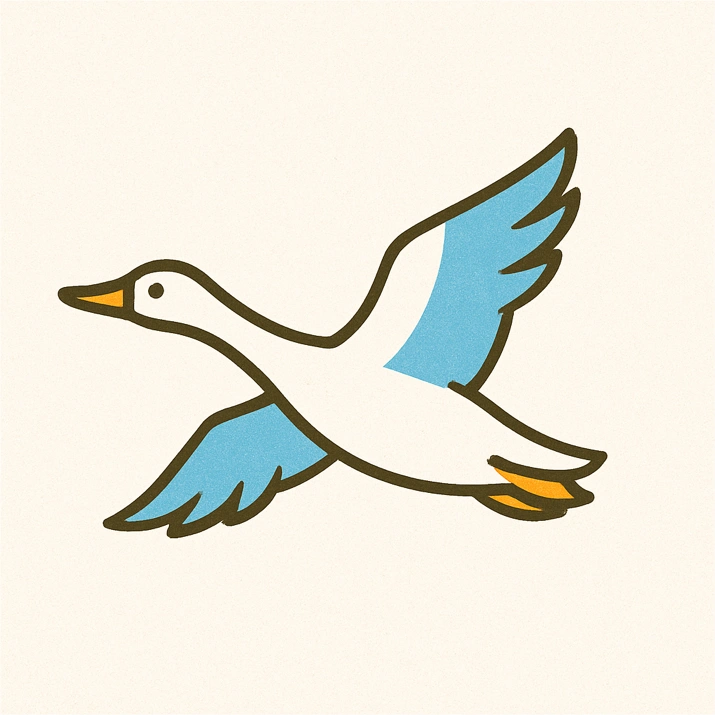

시조·시화·시목
자연과 함께 숨 쉬며 미래로 도약하는 효빈
효빈광역시의 맑고 푸른 자연환경 속에서 함께 자생하며 시민들에게 사랑받아 온 기러기, 해바라기, 오동나무는 우리 시의 변치 않는 상징입니다. 이 상징물들은 각각 '화합과 평화(기러기)', '밝은 희망과 열정(해바라기)', 그리고 '굳건한 발전과 번영(오동나무)'을 의미하며, 300만 효빈 시민의 단합된 마음과 밝은 미래를 향한 역동적인 기상을 대변하고 있습니다.

시조 (市鳥) : 기러기
"서로를 의지하며 미래를 향해 날아오르는 화합의 상징"
V자 대형을 이루며 멀고 험한 비행을 서로 격려하며 함께하는 기러기는 효빈 시민들의 강인한 '협동 정신'과 '화합'을 상징합니다.
해안 반도 지형을 띠어 철새들의 훌륭한 쉼터가 되어주는 효빈시의 청정 자연 생태계를 대표하며, 동북아 해양 및 항공 교통의 중심지로서 전 세계로 힘차게 날아오르는 효빈광역시의 글로벌 네트워크와 개척 정신을 의미합니다.
시화 (市花) : 해바라기
"찬란한 태양을 향해 활짝 핀 무한한 긍정과 열정"
오직 태양만을 바라보며 밝고 탐스럽게 피어나는 해바라기는 효빈 시민들의 '뜨거운 열정'과 미래를 향한 '긍정적인 에너지'를 상징합니다.
수많은 씨앗을 품고 결실을 맺는 해바라기의 넉넉한 모습은 첨단 산업과 다채로운 문화가 만개하여 풍요로운 번영을 이루어 나가는 효빈광역시의 밝고 희망찬 내일을 고스란히 담아내고 있습니다.
시목 (市木) : 오동나무
"뿌리 깊은 전통 위에서 드높이 솟아오르는 굳건한 발전"
예로부터 상서로운 나무로 여겨져 온 오동나무는 어떤 척박한 토양에서도 크고 웅장하게 성장하는 뛰어난 생명력을 자랑하며, 이는 어떠한 시련에도 굴하지 않고 굳건히 발전해 온 효빈광역시의 역사를 대변합니다.
넓은 잎으로 시민들에게 넉넉한 그늘을 제공하는 오동나무처럼, 시민 모두를 따뜻하게 포용하는 든든한 복지 기반과 튼튼한 경제적 토대를 의미하며 영원불멸의 번영을 기원하는 징표입니다.